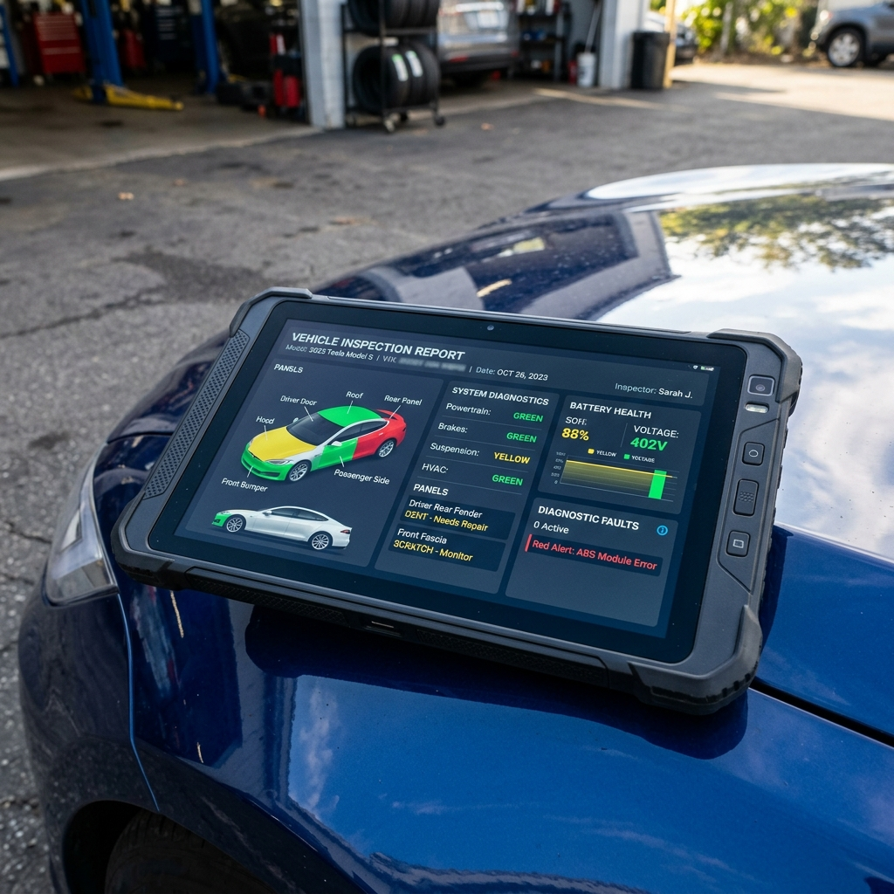
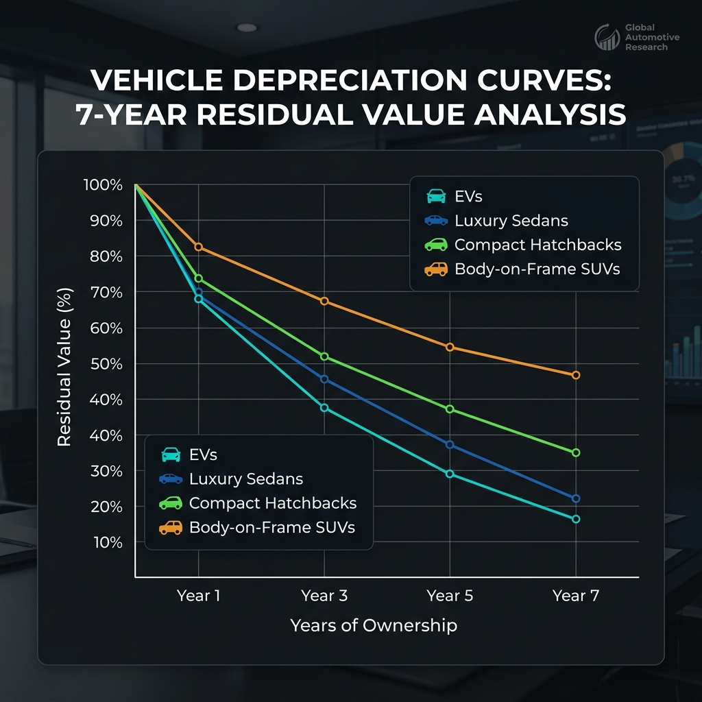

1. The Ex-Showroom Mirage: Why the Sticker Price Lies
For the vast majority of car buyers, the journey begins with a number. You browse online portals, flip through brochures, or glance at dealer advertisements, and your eyes lock onto the prominent bold font: "Ex-Showroom Price: ₹9,99,000." It sounds reasonable. You run some mental arithmetic, calculate a basic monthly EMI, and decide that the vehicle fits comfortably within your budget.
This is the ex-showroom mirage. As a mechanical engineer and automotive quality auditor, I see buyers make this fundamental error week after week. The ex-showroom price is a marketing construct. It is the cost of the vehicle as it leaves the factory gates, before any local, state, environmental, or operational levies are applied. In the real world, you cannot drive an ex-showroom car.
The transition from the ex-showroom price to the true Cost Of Car Ownership is a steep financial slope. The on-road price—the minimum cash required to drive the car out of the showroom—is typically 15% to 25% higher than the ex-showroom sticker. But the financial bleeding doesn't stop at the dealership gates. Fuel, insurance renewals, periodic maintenance, wear-and-tear replacement parts, parking levies, tolls, and the silent assassin—depreciation—will conspire to double your initial budgeted cost over a standard seven-year ownership cycle.
Understanding these numbers is not just about avoiding buyer's remorse; it is about protecting your financial health. Let us systematically expose the seven hidden layers of car ownership that dealerships, finance companies, and manufacturers would prefer you never calculated.
2. Hidden Cost 1: The RTO Road Tax & Registration Extras
The moment you sign the booking form, the dealer introduces you to the "On-Road Price" sheet. The largest single markup on this sheet is the Regional Transport Office (RTO) road tax and registration charges. In India, road tax is not a flat administrative fee; it is a highly variable, slab-based tax that depends on several technical parameters of the vehicle and the specific state in which you reside.
Road tax slabs are calculated based on:
- Engine Displacement: Vehicles with engines under 1,200 cc (petrol) or 1,500 cc (diesel) enjoy lower tax brackets, while larger engines attract massive luxury surcharges.
- Fuel Type: Diesel vehicles are taxed at a higher rate (often 1.5% to 2% more than petrol counterparts) in states like Delhi, in addition to having a capped registration lifespan of 10 years instead of 15.
- Vehicle Length: Sub-4-meter cars receive excise benefits, but states claw back this revenue through progressively higher local registration fees on longer vehicles.
- Ex-Showroom Value Slabs: Slabs are structured progressively. For example, a car priced at ₹9,99,999 might attract a 10% road tax, while a car priced at ₹10,05,000 pushes you into the next slab, attracting a 14% road tax. That minor ₹5,000 increase in ex-showroom price translates to an immediate ₹45,000 increase in your RTO bill.
State-wise discrepancies are staggering. Registering a ₹15 Lakh SUV in Karnataka can cost upwards of ₹2.7 Lakhs (18-20% tax), whereas the same vehicle registered in Gujarat or Union Territories like Daman & Diu might cost just ₹90,000 to ₹1.2 Lakhs (6-8% tax).
Look closely at your dealer's invoice. You will almost certainly spot a line item labeled "Handling Charges," "Logistics Charges," or "Depot Charges," ranging from ₹5,000 to ₹15,000. Dealerships claim this covers transit from the yard to the showroom, cleaning, and registration processing. This charge is completely illegal. The Supreme Court of India and various state RTOs have issued strict directives banning dealers from charging anything over the official RTO registration fees. If your dealer refuses to waive it, inform them that you will handle the RTO registration yourself. They will quickly drop the fee to save the deal.
Furthermore, RTO costs include mandatory extras like the Road Safety Cess, Municipal Corporation Taxes (such as MCD tax in Delhi), Green Tax for diesel passenger vehicles, and High-Security Registration Plates (HSRP) installation fees. None of these are negotiable, and they must be paid upfront before the vehicle is legally registered in the government VAHAN database.
3. Hidden Cost 2: The Insurance Trap (Add-ons, Depreciations & NCB)
In India, you cannot drive a vehicle on public roads without valid insurance. While the basic Third-Party (TP) cover is fixed by the IRDAI, it only covers damage to other people and property. To protect your new investment, you must buy a Comprehensive Own Damage (OD) policy.
However, a standard comprehensive policy is a financial sieve. Under standard terms, the insurer does not cover the full cost of replacing parts damaged in an accident. They apply strict depreciation deductions:
- Rubber, Nylon, Plastic Parts, and Batteries: 50% depreciation.
- Fiberglass Components: 30% depreciation.
- Glass Parts: 0% depreciation.
- Metal Parts: Progressive depreciation from 10% to 50% based on the vehicle's age.
If you get into a minor accident in your first year and need to replace a damaged plastic bumper and headlight assembly costing ₹30,000, you will end up paying ₹15,000 out of your own pocket due to depreciation. To prevent this, you must purchase a Zero Depreciation (Zero-Dep) rider. But Zero-Dep is not a magic shield. It comes with a string of premium add-ons that inflate your annual premium by 30% to 50%:

Infographic: The Anatomy of a Modern Car Insurance Policy
Visualizing the difference between basic Comprehensive insurance and the essential riders required to prevent massive out-of-pocket repair bills.
The Essential Riders and Their True Costs
- Engine Protection Cover: If you drive through waterlogged streets during the Indian monsoon and water enters the engine intake, the engine will suffer a hydrostatic lock. Pistons bend, connecting rods snap, and the engine block cracks. Standard Zero-Dep policy rules classify this as a "consequential damage" (damage caused by your action of starting the car in water, rather than the flood itself) and will reject the claim. Rebuilding a locked engine can cost anywhere from ₹1.5 Lakhs to ₹6 Lakhs. An Engine Protection rider is the only way to cover this, and it costs an extra ₹1,500 to ₹4,000 annually.
- Consumables Cover: During an accident repair, items like engine oil, coolant, gear oil, brake fluid, washers, bolts, and clips must be replaced. A standard insurance policy does not cover these "consumables," which can easily add ₹3,000 to ₹7,000 to your repair bill. A Consumables rider is necessary to cover these.
- Return to Invoice (RTI) Cover: In the unfortunate event of vehicle theft or a total loss accident, a standard policy only pays out the Insured Declared Value (IDV)—which depreciates by 5% to 10% every year. RTI cover ensures the insurer pays you the exact amount printed on your original purchase invoice, including RTO tax and registration fees, allowing you to buy a new replacement car.
Finally, there is the **No Claim Bonus (NCB) Trap**. Insurers offer a progressive discount of 20% to 50% on your Own Damage premium for every year you go without making a claim. If your premium is ₹30,000 and you have a 50% NCB (saving you ₹15,000), making a single small claim for a ₹4,000 dent correction will instantly wipe out your entire NCB. In year two, your premium jumps back to the full amount. In many cases, making a claim for a minor repair actually costs you more in lost NCB discounts over the next few years than paying for the repair out of pocket.
4. Hidden Cost 3: Periodic Maintenance & The Dealer's Consumables Upsell
Manufacturers love to advertise low maintenance costs and highlight "Free Services" for the first one or two years of ownership. This is a classic bait-and-switch. These "free" services only waive the workshop's labor charges. You are still billed for every drop of oil, every filter, and every replacement component.
Once the free service period expires, you enter the regime of paid periodic maintenance, where labor charges alone range from ₹2,500 to ₹6,500 per service. Let us break down the physical reality of the consumables you must replace to keep a modern, high-precision engine running smoothly:
Engine Oil: Fully Synthetic vs. Mineral
Older, low-stress engines ran comfortably on cheap mineral oil (costing ₹250 to ₹350 per liter). Modern engines feature turbochargers, direct injection, and tight tolerances designed to meet stringent emission norms. These engines require fully synthetic oil (meeting specifications like API SP or ACEA C3) to prevent high-temperature sludge buildup and protect turbocharger bearings spinning at 150,000 RPM. Synthetic oil costs between ₹800 to ₹1,200 per liter. A standard 1.5L engine requires 3.5 to 4.5 liters of oil, translating to ₹3,500 to ₹5,500 just for the oil, plus oil filter costs.
High-Efficiency Cabin Filters & Air Pollution
Urban air quality in Indian cities is notoriously poor. High levels of suspended PM 2.5 particulate matter and dust rapidly clog your engine's air filter and the cabin's HVAC filter. A clogged cabin filter forces the AC compressor to work harder, reducing fuel efficiency and cabin cooling. These PM 2.5 activated carbon filters cost between ₹800 to ₹2,500 and must be replaced every 10,000 km, far sooner than the manufacturer's nominal 20,000 km recommendation.
When you drop your car off for a routine service, the service advisor will present an estimate sheet filled with highly technical-sounding additions. They will recommend:
1. Engine Flushing (₹1,500 - ₹2,500): Completely unnecessary for a regularly serviced vehicle; modern synthetic oils already contain advanced detergents that prevent sludge.
2. AC Sanitization / Disinfection (₹2,000 - ₹3,500): A simple spray of aerosol disinfectant into the vents. You can do this yourself with a ₹300 can.
3. Anti-Rust / Silencer Coating (₹3,000 - ₹6,000): Modern cars are manufactured with galvanized steel panels and rust-resistant exhaust alloys. Unless you live on a coastal road, this coating is pure dealer profit margin.
Always review the estimate, open your owner's manual, and check the official manufacturer maintenance schedule. Instruct the advisor to cross out any items not specifically mandated by the manufacturer.
5. Hidden Cost 4: Wear-and-Tear Lifecycles (Tires & Batteries)
Tires and batteries are the unsung heroes of vehicle operation, and they represent significant, predictable expenses that buyers rarely factor into their monthly running costs. They operate on fixed lifecycles and are highly sensitive to Indian environmental and road conditions.
Tire Compounds: The 40,000 KM Cliff
A modern passenger vehicle tire is made of vulcanized rubber compounds, steel belts, and nylon plies. Even if you do not drive long distances, tires have a strict shelf life. Under the intense UV radiation and high ambient temperatures of Indian summers, the volatile oils within the rubber compound evaporate. This process, known as **dry rot** or ozone cracking, makes the rubber hard and brittle. Hard tires offer poor wet-weather grip, transmit harsh road vibrations into the cabin, and are highly prone to sidewall blowouts.
If you do drive regularly, tire tread wears down. In India, rough tarmac, concrete highways, potholes, and poor wheel alignment accelerate tread wear. Most passenger car tires reach their wear indicators at 40,000 to 50,000 km. Replacing a set of four tires is a major financial event:
- Hatchbacks (14-15 inch): ₹16,000 to ₹22,000 per set.
- Sedans & Compact SUVs (16-17 inch): ₹24,000 to ₹40,000 per set.
- Premium SUVs (18-19 inch): ₹55,000 to ₹1,00,000+ per set.
Battery Chemistry: Lead Sulfation and Smart Alternators
Under-bonnet temperatures in modern engine bays routinely exceed 80°C. This extreme heat evaporates water from the electrolyte solution inside standard lead-acid batteries, leading to rapid corrosion of the internal lead-antimony grids.
Additionally, many modern cars feature smart alternators and **Auto Start-Stop** technology to save fuel. Every time your car stops at a traffic signal, the engine shuts off, and the electrical systems (headlights, blower fans, infotainment screen) draw power directly from the battery. When you press the clutch, the battery must supply a massive surge of current to crank the engine again.
This heavy cyclic loading requires advanced **EFB (Enhanced Flooded Battery)** or **AGM (Absorbent Glass Mat)** batteries. These batteries cost between ₹9,000 to ₹16,000 (compared to ₹4,500 for a standard battery) and typically last just 3 to 4 years before suffering from irreversible lead sulfation and grid failure.
6. Hidden Cost 5: Fuel Quality, AdBlue Surcharges & Efficiency Realities
When shopping for a vehicle, the salesperson will proudly point to the **ARAI Mileage** certificate. A sticker reading "20.1 km/l" looks fantastic. However, ARAI (Automotive Research Association of India) testing is conducted on a chassis dynamometer inside a climate-controlled laboratory. The test cycle simulates gentle acceleration, zero headwinds, no traffic delays, and—most importantly—the air conditioning system is completely turned off.
In the real world, your driving conditions are vastly different. In Indian urban traffic, you crawl in low gears, sit idling at traffic signals, navigate bumper-to-bumper congestion, and run the air conditioning at full blast to combat ambient temperatures. This drops your real-world fuel economy by 30% to 50% compared to the ARAI claims. If your 1.5L petrol engine is rated for 17 km/l, expect 9 to 11 km/l in dense city traffic. Over a year of driving 12,000 km, this variance translates to an extra ₹30,000 to ₹45,000 in fuel costs alone.

Infographic: ARAI Claims vs. Real-World Fuel Economy
Understanding the impact of urban traffic cycles, idle times, and air conditioning on petrol and diesel fuel efficiency.
The Hidden Costs of Modern Diesel Emissions (BS6 / BS6 Phase II)
If you choose a diesel vehicle, the BS6 emission norms introduce two new layers of running costs:
- Diesel Exhaust Fluid (DEF / AdBlue): BS6 diesel engines utilize a Selective Catalytic Reduction (SCR) system to reduce NOx emissions. This system requires DEF, an aqueous urea solution stored in a dedicated auxiliary tank. The car consumes DEF at a rate of roughly 1% to 1.5% of fuel consumption. You must refill this tank (typically costing ₹800 to ₹1,500) every 6,000 to 10,000 km.
- The DPF Clogging Nightmare: The Diesel Particulate Filter (DPF) traps dangerous soot particles from the exhaust stream. To clean itself, the DPF must undergo "regeneration"—a process that requires driving at a sustained high speed (over 60 km/h) for at least 25-30 minutes to raise exhaust temperatures high enough to burn off the soot. If you use your diesel SUV primarily for short, low-speed grocery runs and city commutes, the soot accumulation will quickly clog the filter. The vehicle will enter "limp mode," displaying a warning light. If active regeneration fails, you must take the car to a dealer for a manual regeneration (costing ₹2,500 to ₹5,000) or replace the damaged DPF unit entirely (costing up to ₹80,000).
7. Hidden Cost 6: Parking, Society Levies & FASTag Tolls
Owning a car is a continuous stream of micro-transactions. Individually, they seem negligible; cumulatively, they are a significant budget drain.
FASTag and Toll Tax Leakage
With the implementation of mandatory FASTag RFID tags on all national and state highways, paying toll taxes is seamless. However, this ease makes toll taxes a hidden expense. A weekend road trip from Ahmedabad to Mumbai can easily cost ₹800 to ₹1,200 in one-way toll taxes alone. For frequent highway travelers, toll bills can exceed ₹15,000 to ₹25,000 annually, directly deducted from your linked bank account or wallet.
Residential and Commercial Parking Penalties
Space is premium in urban India. Many modern housing societies charge hefty monthly or annual maintenance levies for a designated car parking slot. If you purchase a second vehicle, societies often charge an escalated fee, ranging from ₹1,000 to ₹5,000 per month for an open parking space. When you travel out, commercial parking rates in city centers, office complexes, shopping malls, and airports range from ₹40 to ₹200 per hour.
Cosmetic Deterioration & The Daily Wash Damage
Most car owners hire a local neighborhood watchman or cleaning service to wash their car daily, paying ₹500 to ₹1,000 a month. This daily wash is actually a major source of paint damage. Cleaners typically use a single bucket of dirty water and a dry, dusty cloth to wipe down multiple vehicles. This process grinds dust particles, sand, and grit into your car's soft clear coat, creating millions of microscopic scratches called swirl marks.
Over 2-3 years, these swirl marks make the paint look dull, faded, and hazy. To restore the original gloss, you will eventually have to take the car to a professional detailing studio for a multi-stage machine compounding and paint correction process, costing anywhere from ₹8,000 to ₹25,000.
8. Hidden Cost 7: The Silent Killer—Depreciation & Out-of-Warranty Repairs
Depreciation is the single largest cost of owning a new vehicle, yet it is completely invisible because it does not require you to write a monthly check. Instead, it slowly erodes the value of your asset.
A new passenger vehicle is a rapidly depreciating asset. The moment you drive your brand-new car out of the dealer's delivery bay and onto the public road, its market value drops by 15% to 20%. This initial hit is because the vehicle is now legally classified as a "used car" with one owner on the RC card.
The depreciation curve in India typically follows this trajectory:
- Year 1: 15% to 20% drop.
- Year 3: 35% to 40% drop.
- Year 5: 50% to 55% drop.
- Year 7: 65% to 75% drop.
If you bought a premium hatchback for ₹10 Lakhs, its real market value by the end of year three is roughly ₹6.5 Lakhs. You have lost ₹3.5 Lakhs in value—which translates to a hidden cost of nearly ₹10,000 per month, far exceeding what you spent on fuel or maintenance during that time.
Depreciation rates vary based on vehicle segments. Compact petrol cars from brands like Maruti Suzuki and Toyota hold their value remarkably well due to high demand in the used car market. Conversely, luxury brands (BMW, Mercedes-Benz, Audi) and large diesel SUVs suffer from steep depreciation curves, often losing 50% of their value in just 3 years due to high maintenance costs, lower fuel efficiency, and policy restrictions like Delhi's 10-year diesel ban.
Out-of-Warranty Repair Risks
Most manufacturers offer a standard 2 to 3-year warranty. While you can extend this up to 5 or 7 years at an extra cost (another hidden expense), you will eventually step out of the warranty safety net. Once the warranty expires, complex mechanical and electrical components that fail due to wear-and-tear or road conditions become your financial responsibility:
- Suspension Bushing & Dampers: Bumper-to-bumper potholes and speed breakers destroy suspension bushes, ball joints, and struts. Rebuilding a front suspension assembly costs ₹15,000 to ₹45,000.
- Clutch Plate Assemblies: In stop-and-go urban traffic, drivers frequently slip the clutch to crawl forward. This friction wears down the clutch lining, causing clutch slippage. A replacement clutch kit and release bearing can cost ₹6,000 to ₹18,000.
- Turbochargers & Steering Racks: Electronic steering racks are highly sensitive to road shocks and develop play, leading to rattling noises. Replacing an EPS rack costs ₹20,000 to ₹50,000. Turbochargers can fail due to poor lubrication, costing ₹40,000 to ₹90,000.
9. Cumulative 7-Year Maintenance & Running Cost Sheet
To bring all these hidden variables into perspective, let us look at a comprehensive, data-driven cost projection. The table below tracks the actual cumulative maintenance, wear-and-tear replacements, and operational expenses of a vehicle over a standard 7-year ownership period (assuming 10,000 km driven annually in a typical Indian tier-1/tier-2 city context):
| Year | Hatchback (e.g. Swift/i10) (INR) | Sedan (e.g. Honda City/Slavia) (INR) | Mid-Size SUV (e.g. Creta/Nexon) (INR) | Primary Cost Drivers |
|---|---|---|---|---|
| Year 1 | ₹4,500 | ₹6,800 | ₹8,500 | First oil change, wheel alignment, consumables during free service. |
| Year 2 | ₹6,200 | ₹9,500 | ₹11,800 | Paid service labor, brake fluid flush, cabin air filter replacement. |
| Year 3 | ₹11,500 | ₹18,000 | ₹21,000 | First battery replacement, spark plugs/fuel filter, paid service. |
| Year 4 | ₹24,000 | ₹38,000 | ₹48,000 | Full set of 4 tire replacements, brake pad wear replacement, transmission fluid change. |
| Year 5 | ₹8,500 | ₹14,000 | ₹17,500 | Coolant flush, drive belt replacement, routine periodic lubrication. |
| Year 6 | ₹18,000 | ₹28,000 | ₹35,000 | Second battery replacement, front suspension bushing overhaul, throttle body cleaning. |
| Year 7 | ₹32,000 | ₹55,000 | ₹72,000 | Clutch plate replacement, brake disc rotor resurfacing, AC evaporator coil cleaning, major interval service. |
| Cumulative 7-Year Total | ₹1,04,400 | ₹1,69,300 | ₹2,13,800 | Total scheduled maintenance & component wear costs (excludes fuel & insurance). |
10. Case Study: The True Running Costs of a Premium SUV
To see how these numbers impact a real buyer, let us look at the case of Rahul Verma, an IT manager in Vadodara who purchased a mid-size SUV in 2023.
Rahul budgeted for his purchase carefully. The SUV's ex-showroom price was ₹16.5 Lakhs, and the on-road price was ₹19.2 Lakhs. He secured a bank loan with a monthly EMI of ₹28,000, which fit within his monthly income. He budgeted ₹6,000 a month for petrol, assuming a fuel efficiency of 14 km/l.
However, over the first year of ownership, Rahul's financial calculations fell apart:
Case Study: SUV Owner's Unexpected Annual Running Expenses
1-Year Cost Audit
- Loan EMIs: ₹3,36,000
- Budgeted Fuel (10,000 km @ 14 km/l): ₹72,000
- Standard Service: ₹0 (Free service)
Total Budgeted: ₹4,08,000
- Loan EMIs: ₹3,36,000
- Real Fuel (City running @ 9.5 km/l): ₹1,06,000 (₹34,000 variance)
- First Paid Service & Consumables: ₹9,800
- Insurance Renewal with Zero-Dep & Engine Protect: ₹38,500
- Parking & FASTag tolls: ₹14,200
- Detailing / Swirl Paint Correction: ₹12,000
- Rodent damage repair (Insurance deductible + harness patch): ₹8,500
Total Out-of-Pocket: ₹5,25,000
Rahul's actual running costs exceeded his expectations by ₹1,17,000 (nearly ₹10,000 extra per month). He did not account for real-world fuel variations, premium insurance renewals, rodent damage, tolls, or cosmetic upkeep. If we add Year 1 depreciation (a loss of roughly ₹3.5 Lakhs in vehicle value), his total economic cost of ownership for Year 1 was actually ₹8,75,000.
11. Interactive Checklist: The 7 Hidden Costs Audit
Before you sign the booking papers or commit to a monthly loan payment, run your potential purchase through this hidden costs audit to ensure you are financially prepared for the road ahead.
Car Cost of Ownership Feasibility Check
Click each item below as you verify these expenses in your monthly budget calculations.
- State-Level Road Tax Audit: Have you verified the exact RTO road tax slab for your vehicle's engine and price bracket? Have you ensured the dealer has not added illegal "handling or logistics charges" to the invoice?
- Insurance Premium Projection: Have you gotten quotes from independent insurers with Zero-Depreciation, Engine Protect, and Consumables riders included, rather than relying on the dealer's standard premium estimate?
- Out-of-Pocket Consumables Budget: Have you factored in the cost of synthetic engine oils, air/cabin filters, and standard service labor charges that apply after the "free" services end?
- Tire & Battery Replacement Reserve: Are you saving a monthly reserve (roughly ₹500 - ₹1,000) to cover the cost of replacing your tires at 40,000 km and your battery at year 3 or 4?
- Real-World Fuel Efficiency Math: Have you calculated your monthly fuel costs using a realistic city mileage figure (35% lower than the ARAI rating) and factored in AdBlue fluid costs if buying a BS6 diesel?
- Micro-Transaction Tracking: Have you budgeted for monthly housing society parking fees, commercial parking ticket rates, and FASTag toll deductions for weekend road trips?
- The Depreciation and Detailing Reality: Have you accepted that the vehicle will lose 40% of its resale value in 3 years, and budgeted for professional paint detailing to prevent swirl marks caused by local daily wash routines?
12. The CARROBAAR_Drive Difference: Protecting Your Investment
Navigating the financial and mechanical complexities of car ownership requires a clear head and an independent, unbiased partner. At CARROBAAR_Drive, we operate with a strict **Zero-Commission, Conflict-of-Interest-Free policy**. We do not sell cars, we do not accept dealer kickbacks, and we do not sell insurance policies.
Our job is to work exclusively for you, the buyer, to ensure you make informed decisions and avoid buying financial liabilities or compromised vehicles.
Serving Anand, Vadodara, Khambhat, and Ahmedabad, we offer three core services designed to protect your investment:
- New Car PDI (Pre-Delivery Inspection): We visit the dealer's stockyard with high-precision coating thickness gauges, OBD2 scanners, and battery analyzers to catch transit damage, repainted panels, and weak batteries before registration. This ensures you do not get stuck with a repaired car.
- Used Car Pre-Purchase Inspection: We conduct a comprehensive 300+ point physical and digital inspection of any used vehicle you are considering, exposing hidden accident history, odometer tampering, engine sludge, and suspension wear.
- Automotive Consultation & Buying Assistance: We analyze your driving patterns, monthly budget, and space requirements to help you choose the right brand, engine type (petrol, diesel, CNG, or EV), and variant. We help you cut through dealer upsell pitches, negotiate insurance quotes, and optimize your overall cost of ownership.
Infographic: The CARROBAAR_Drive Quality Shield
How our independent inspection gates protect buyers from manufacturing issues, transit damages, and unexpected running costs.
Car Ownership Cost FAQs
The ex-showroom price is merely the base cost of the vehicle as set by the manufacturer. To make it road-legal, you must add state RTO road tax and registration charges (ranging from 6% to 20% depending on engine size and state regulations), mandatory insurance premiums (including Own Damage, Third Party, and Zero-Depreciation riders), FASTag charges, municipal taxes, and road safety cess. These additional costs can add 15% to 25% to the base price of the car.
Handling fees (often labeled as logistics or depot charges) are charged by dealerships under the pretext of cleaning, transporting the car from the yard, and processing paperwork. These fees are completely illegal. The Supreme Court of India and various state RTOs have ruled that dealers cannot charge any fees beyond the ex-showroom price and official government taxes. You should refuse to pay this fee, and if the dealer persists, offer to register the car yourself.
Yes, you do. Standard comprehensive and Zero-Depreciation policies do not cover "consequential damages" like engine damage caused by water ingestion (hydrostatic lock) during floods. A rebuild of a water-locked engine can cost over ₹2 Lakhs, which is only covered if you have an Engine Protection rider. Similarly, standard insurance does not cover consumables replaced during repairs (oils, coolant, clips, bolts). A Consumables cover ensures you are not billed thousands of rupees for these minor parts in an accident repair.
Official ARAI mileage claims are tested in lab settings with no wind resistance, gentle speeds, no traffic, and the air conditioning turned off. In a typical Indian city, bumper-to-bumper traffic forces you to drive in low gears (first and second), where fuel consumption is highest. Combined with long idle times at traffic signals and running the AC constantly, your engine consumes significantly more fuel, dropping efficiency by 30% to 50% compared to the laboratory ratings.
Diesel Particulate Filters (DPF) trap soot in modern BS6 diesel exhausts. To clear the soot, the DPF must periodically heat up to high temperatures through "regeneration," which requires driving at highway speeds (above 60 km/h) for 25-30 minutes. If a diesel vehicle is driven only on short, low-speed city trips, the soot builds up without burning off, clogging the filter. This forces the car into "limp mode," necessitating a dealer visit for manual regeneration (costing ₹2,500 - ₹5,000) or a complete replacement of the DPF unit.
Most local watchmen or cleaners use a single bucket of water and a single piece of cloth to clean multiple cars in a neighborhood. Dust, grit, and sand particles from the road stick to the cloth and are rubbed back onto your car's clear coat. This acts like sandpaper, creating microscopic circular scratches known as swirl marks. Over time, these swirl marks dull the paint, requiring a professional machine polish and paint correction costing ₹8,000 to ₹25,000 to fix.
Tires are made of organic rubber compounds that dry out over time due to UV exposure and heat. This process, called dry rot, makes the rubber hard and brittle, creating micro-cracks in the tread and sidewall. Hard rubber offers poor road grip and is highly susceptible to blowouts. Even if the tire tread is not worn down, tires should be replaced every 5 to 6 years, or every 40,000 to 50,000 km, whichever comes first, to ensure driving safety.
A brand-new car loses 15% to 20% of its value the second it is registered and driven off the lot. By the end of year three, depreciation typically takes away 35% to 40% of the initial on-road value. By year five, most cars are worth only 50% of what was originally paid. Luxury brands and large diesel cars generally depreciate even faster due to higher maintenance costs and shifting fuel policies.
Mineral oil is refined from crude oil, whereas synthetic engine oil is chemically engineered in laboratories to provide superior molecular consistency and heat resistance. Modern turbocharged, high-stress passenger car engines require fully synthetic oil to prevent high-temperature sludge buildup and protect turbocharger bearings that spin at extreme speeds. Synthetic oil is much more expensive (₹800 - ₹1,200 per liter) than mineral oil (₹250 - ₹350 per liter) but is mandatory for modern engine health.
By hiring CARROBAAR_Drive for a Pre-Delivery Inspection (PDI) or used car check, you detect issues like transit damage, repainted panels, weak batteries, and faulty electronics before completing the purchase. This allows you to reject a damaged car or force the dealer to replace parts at their expense before registration. Furthermore, our buying assistance helps you select the most efficient fuel type, variant, and maintenance structure, saving you lakhs in fuel, repairs, and depreciation over your ownership cycle.
Optimize Your Cost of Car Ownership
Don't guess your vehicle expenses or take delivery of a compromised car. Hire CARROBAAR_Drive for an independent Pre-Delivery Inspection or used car audit in Anand, Vadodara, Khambhat, and Ahmedabad.